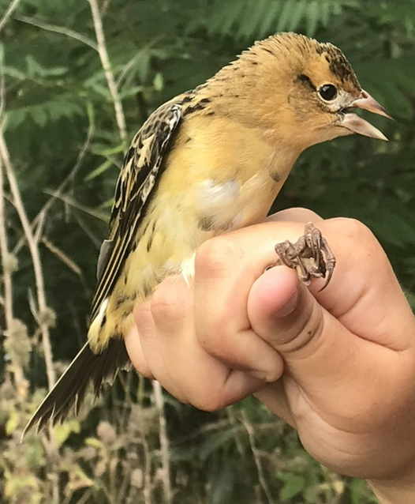
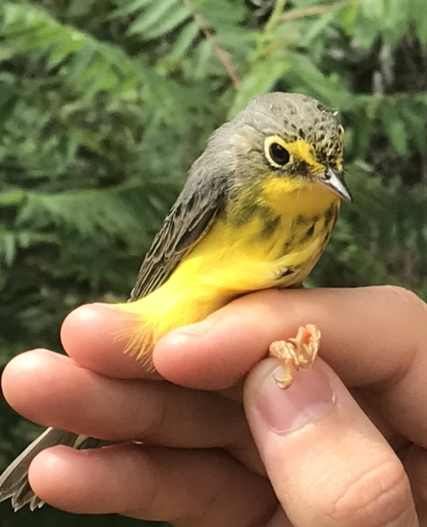
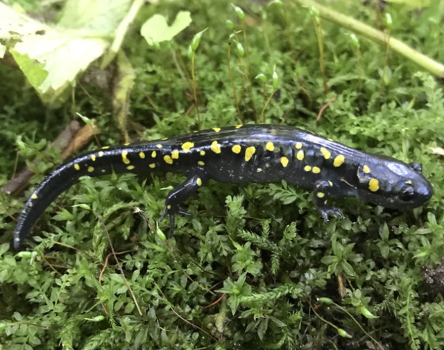

Even if you live in Prince Edward County, it can be a long drive to the end of Long Point Road where Peptbo is located.
This location makes it a prime stopover point for migratory birds making the journey across Lake Ontario.
Volunteering at the bird banding station gives me the chance to handle some beautiful birds, including species at risk such as Bobolinks and Canada Warblers

Bobolink (Status:Threatened), Credit: Abby Leavens, August 29, 2021.

Canada Warbler, (Status: Special Concern), Credit: Abby Leavens, August 29, 2021 Male Golden-crowned Kinglet, showing off his crown. Credit: Abby Leavens, October 18, 2020.
In the fall, they also band Northern-saw whet owls.
Newly banded Northern saw-whet owl after being released back into the wild. Credit: Abby Leavens, October 28, 2020.
When you look at the feathers under an ultra-violet light, the poriphryn pigments will cause certain feathers to become fluorescent pink, which helps to determine the age of the individual.
Feathers under UV light. Credit: Abby Leavens, October 28, 2020.
BIRD-BANDING ABROAD
Madre de Dios, Peru
This region is one of the most biologically diverse places on Earth. I was fortunate to spend two months at two different field stations a short boat ride from Filadelfia, Peru.One of many beautiful sunsets in Madre de Dios, Peru. Credit: Abby Leavens, June 22, 2018.
Aging and sexing birds in the Amazon is much more difficult because they breed at any time of year. However, sometimes you get lucky and see a flamboyant male like this Blue-headed Manakin
Nearly fluorescent blue crown feathers of a male blue-headed manakin. Credit: Abby Leavens, August 9, 2018.
HANDLING AMPHIBIANS
Western Ontario
I got well-acquainted with our local Ontario salamander species when I monitored them for 9 weeks in 2019.
The only blue-spotted salamander found during monitoring. Credit: Abby Leavens, October 23, 2019.

A beautiful yellow-spotted salamander on a bed of moss. Credit: Abby Leavens, September 17, 2019.
While on Pelee Island, I did road mortality surveys by bicycle, but sometimes we found live snakes as well.
Juvenile Fox Snake found alive during road surveys on Pelee Island. Credit: Abby Leavens, September 1, 2020.